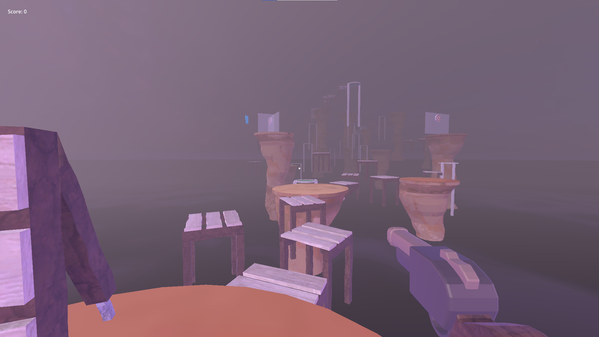
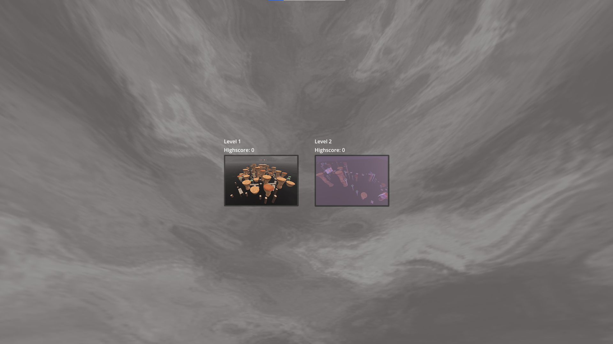
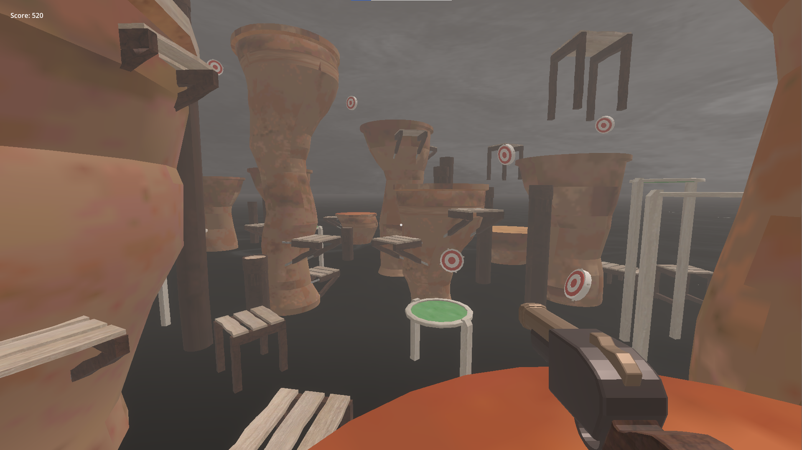
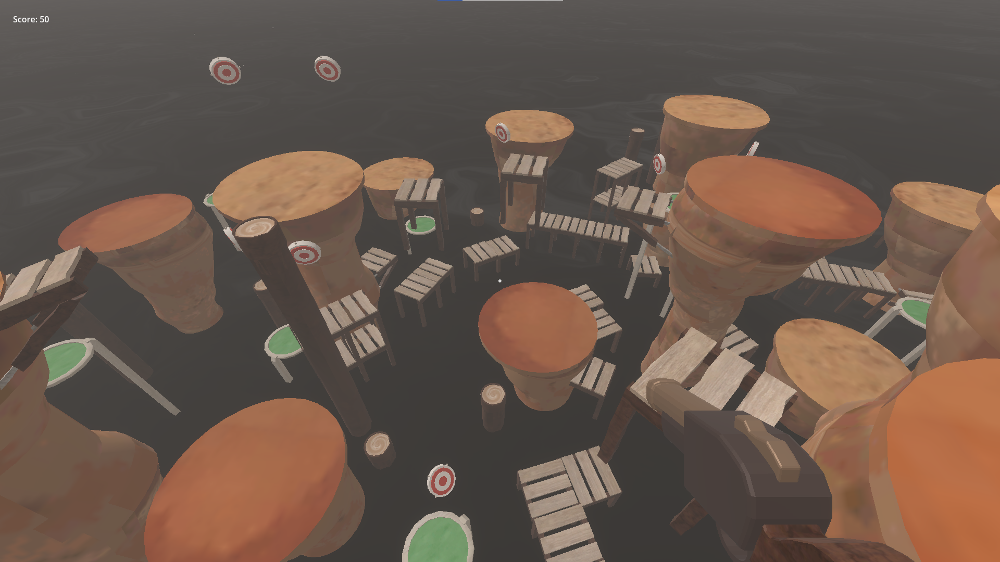
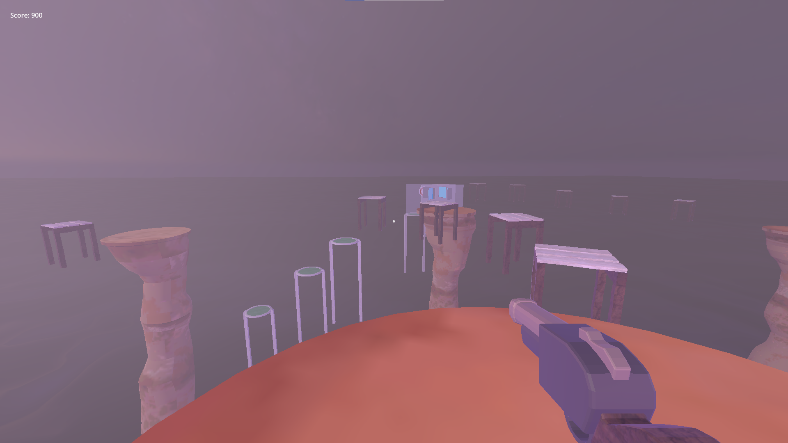

NOSINK







Overview
This is a project I made in 48 hours with one other designer and one programmer for Nordic Game Jam 2026, which had the theme "nothing".
Role and Contributions
I took on the designer role.
Engine and Tools
More details will be added here later.